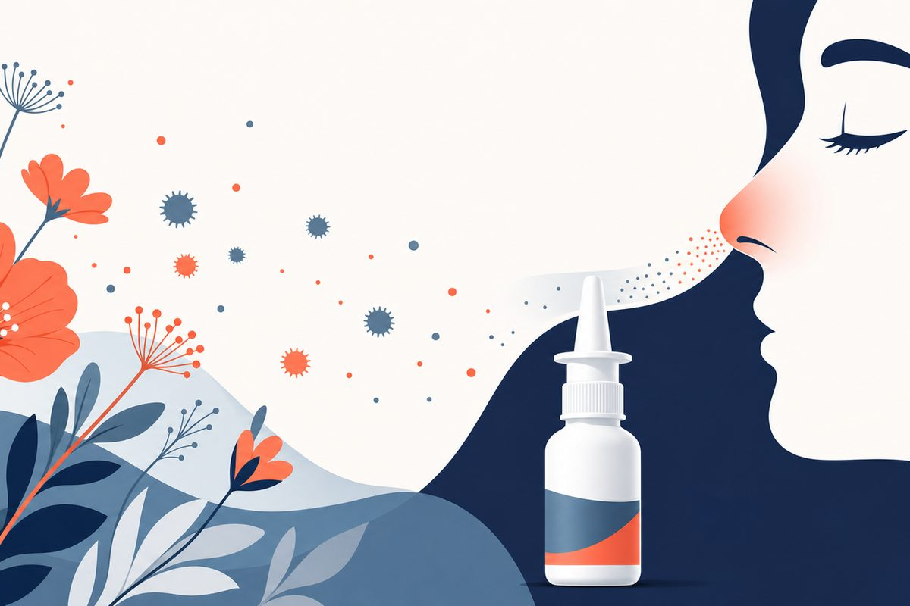

Key Takeaways
- About one in four U.S. adults (25.2%) had a diagnosed seasonal allergy in 2024.[1] The Asthma and Allergy Foundation of America estimates that more than 82 million people in the U.S., including about 14 million children, were diagnosed with seasonal allergies that year.[2]
- Climate change is making allergy seasons longer and more intense: longer freeze-free seasons give plants more time to release pollen earlier in spring and later into fall.[3]
- Intranasal corticosteroid sprays are the preferred single medicine for persistent allergic rhinitis, and U.S. and international guidelines support adding an intranasal antihistamine when one medicine is not enough.[4][5][6]
- Allergy tablets taken under the tongue (sublingual immunotherapy) have near-equivalent efficacy to allergy shots, with a superior safety profile that allows self-administration.[7]
- People with seasonal allergies don't usually have a fever. If you have a fever with nasal symptoms, a cold or other infection is more likely than allergies alone.[8]

Every spring, a common pattern shows up in clinical care: people arrive miserable after weeks of sneezing, congestion, and watery eyes before seeking help. Many assume seasonal allergies are just something you "deal with" and that they don't warrant medical attention. Others have been taking the wrong medications, or the right medications in the wrong way, for years.
Seasonal allergic rhinitis affects a large share of the population. In 2024, 25.2% of U.S. adults had a diagnosed seasonal allergy, according to the National Center for Health Statistics.[1] The Asthma and Allergy Foundation of America puts this at around 67 million adults and 14 million children, more than 82 million people in all, and reports that more than 106 million people in the U.S. experience various types of allergies each year.[2] And the problem is getting worse. In 172 of the 198 U.S. cities Climate Central analyzed, the freeze-free season has lengthened since 1970, by 20 days on average, giving plants more time to release allergy-inducing pollen earlier in spring and later into fall.[3] A 2022 modeling study projected that, with end-of-century warming, spring pollen emissions could start 10 to 40 days earlier and summer and fall weed and grass emissions could run 5 to 15 days later.[9]
This guide reflects the ARIA-EAACI 2024-2025 guideline revision on intranasal treatments, the Rhinitis 2020 practice parameter update from the Joint Task Force on Practice Parameters, and the American Academy of Otolaryngology-Head and Neck Surgery Foundation (AAO-HNSF) clinical practice guideline on allergic rhinitis, along with the peer-reviewed literature.[6][4][5] It aims to be thorough, honest, and practical, written to the same evidence standard a clinician would expect for their own family.
What Causes Seasonal Allergies?
Seasonal allergic rhinitis is an immune system overreaction: your immune system mistakenly identifies a typically harmless substance, such as pollen, as an intruder.[10] This triggers a cascade of immune events that produces the symptoms you know all too well.
Here's the mechanism in brief: the first time you're exposed to an allergen (say, ragweed pollen), your immune system produces Immunoglobulin E (IgE) antibodies specific to that allergen. These IgE antibodies attach to mast cells in your nasal lining, eyes, and airways. On later exposures, the allergen binds to those waiting IgE antibodies, causing mast cells to release histamine, leukotrienes, and other inflammatory mediators. This is what produces sneezing, itching, nasal congestion, and watery eyes, your body's misguided defense against a harmless substance.
Common Pollen Triggers by Season
Hay fever symptoms tend to flare up in the spring, summer and fall, as different pollens are carried in the air at different times of year.[10]
- Spring: Tree pollen is the dominant trigger. Common culprits include oak, birch, cedar, maple, elm, and ash.
- Late spring and summer: Grass pollen becomes predominant. Timothy, Bermuda, Kentucky bluegrass, and ryegrass are among the grasses that commonly cause symptoms.
- Late summer through fall: Ragweed is a major cause of fall allergies. Climate modeling projects that total annual pollen emissions in the continental U.S. could rise by 16 to 40% by the end of the century.[9]
- Variable or year-round: Outdoor mold spores (Alternaria, Cladosporium) can add to the allergen burden across several seasons.
Why Some People and Not Others?
The tendency to develop allergies, called atopy, runs in families. Genes alone don't explain everything, though: the allergens and environment you are exposed to also shape whether someone with that tendency develops symptoms.
Allergies vs. Cold vs. Sinus Infection: How to Tell the Difference
This is one of the most common diagnostic questions in primary care. Colds and allergies share some symptoms, such as a runny or stuffy nose and sneezing, but key symptoms and how regularly symptoms appear help tell them apart.[8] Sinus infections overlap with both, and seasonal allergies and a previous cold are listed as risk factors for them.[11]
| Feature | Seasonal Allergies | Common Cold | Sinus Infection (Sinusitis) |
|---|---|---|---|
| Cause | Immune response to allergens such as pollen | Immune response to a virus | Mostly viruses; bacteria cause some |
| Duration | May last several weeks | 3 to 10 days in adults; a cough may last a couple of weeks longer | See a provider if symptoms last more than 10 days without getting better |
| Nose | Runny or stuffy nose; clear discharge | Runny or stuffy nose | Runny or stuffy nose; mucus dripping down the throat |
| Itchy eyes | Usual; itching of the nose, roof of the mouth and throat is common | Rare | Not a listed symptom |
| Sneezing | Common | Common | Not a listed symptom |
| Fever | Not usual | Often | Possible; see a provider if fever lasts longer than 3 to 4 days |
| Sore throat or cough | Sore throat rare; cough sometimes | Usually | Can occur |
| Other clues | Flares in spring, summer and fall with pollen seasons | Follows catching a virus | Facial pain or pressure, headache, bad breath; may get worse after improving |
Sources for the table: Mayo Clinic (allergies and colds), the AAAAI (allergy symptoms and seasons), and the CDC (sinus infections).[8][10][11]
The clinical pearl worth remembering: itching points toward allergies. Itchy eyes are usual with seasonal allergies and rare with colds. Conversely, a fever or a sore throat points away from allergies alone and toward an infection such as a cold.[8]
What's Changed: Latest Clinical Guidelines
The ARIA-EAACI 2024-2025 revision was developed with the GRADE evidence-to-decision framework and was conceived as person-centered and digitally enabled. Part I, published in 2025, covers intranasal treatments.[6]
The Allergic Rhinitis and its Impact on Asthma (ARIA) guidelines, endorsed by the European Academy of Allergy and Clinical Immunology, addressed 11 questions on intranasal treatments in Part I of the 2024-2025 revision. Overall, the panel suggests a fixed combination of an intranasal antihistamine and an intranasal corticosteroid over either medicine alone, and an intranasal corticosteroid over an intranasal antihistamine. These are conditional recommendations, and the panel stresses that treatment choices should consider how the disease varies, patients' values, and the affordability of medicines. The panel also suggests against using intranasal decongestant sprays long term (longer than 5 days).[6]
A 2025 review of developments since the third allergen immunotherapy practice parameter reports that most new evidence comes from large double-blind, placebo-controlled trials of sublingual immunotherapy (SLIT) tablets in allergic rhinitis, allergic asthma, and atopic dermatitis. SLIT and subcutaneous immunotherapy (allergy shots) have near-equivalent efficacy, but SLIT has a superior safety profile, allowing self-administration. More evidence has also identified risk factors for anaphylaxis to allergy shots and ways to reduce that risk.[7]
In the U.S., the Rhinitis 2020 practice parameter update likewise calls intranasal corticosteroids the preferred monotherapy for persistent allergic rhinitis and reports added benefit from combining them with an intranasal antihistamine.[4] What does this mean for patients? Your physician has guideline-backed options to match treatment to your symptom severity, and disease-modifying immunotherapy is now available as a tablet you can take at home after the first supervised dose.[12]
Decision Framework: Manage at Home, See a Doctor, or Go to the ER
Not every case of seasonal allergies needs medical attention, but some do. Here is a practical framework to help decide what level of care you need:
| Scenario | Recommended Approach | Rationale |
|---|---|---|
| Mild symptoms (occasional sneezing, mild runny nose, minimal impact on daily activities) | Manage at home: allergen avoidance, nasal saline rinses, and/or an OTC second-generation antihistamine | Guidelines strongly recommend second-generation oral antihistamines when sneezing and itching are the main complaints[5] |
| Moderate symptoms (daily congestion, frequent sneezing, itchy or watery eyes, disrupted sleep or impaired concentration) | Start or optimize an intranasal corticosteroid; see a doctor if that isn't enough, to consider combination therapy | Guidelines strongly recommend intranasal steroids when symptoms affect quality of life, and support combination therapy when one medicine is not enough[5][6] |
| Severe or persistent symptoms despite OTC medications, or recurrent sinus infections | See a doctor; an allergist referral may be appropriate for allergy testing and possible immunotherapy | Guidelines advise allergy testing when empiric treatment fails and offering immunotherapy when medicines don't control symptoms[5]; immunotherapy can modify the natural history of allergic rhinitis and asthma[7] |
| Coexisting asthma with worsening cough, wheezing, or chest tightness during allergy season | See a doctor promptly, the same day or next day | Guidelines ask clinicians to check people with allergic rhinitis for asthma and other related conditions[5] |
| Signs of anaphylaxis or a severe allergic reaction: swollen throat, trouble breathing, widespread hives, passing out | Go to the ER immediately: use your epinephrine if you have it and call 911 | Anaphylaxis is a medical emergency[13] |
The key message: seasonal allergies are highly treatable, and you don't need to suffer through them. If an over-the-counter steroid nasal spray hasn't helped within 7 days of starting it, its label says to stop and ask a doctor.[14]
What Your Doctor Is Thinking: Behind the Clinical Reasoning
When you present with nasal symptoms during allergy season, your physician is running through a systematic evaluation that may not be obvious. Understanding this reasoning helps explain why we ask what we ask, and why we sometimes recommend testing.
The Questions and Why They Matter
- "When did your symptoms start, and is there a seasonal pattern?" This is one of the most useful diagnostic questions. Symptoms that recur at the same time each year and match local pollen seasons strongly suggest allergic rhinitis.
- "Do your symptoms include itching in your nose, eyes, or palate?" Itching points strongly toward allergy. Its absence makes other diagnoses, such as nonallergic rhinitis or chronic sinusitis, more worth considering.
- "Do you have asthma, eczema, or a family history of allergies?" Atopic conditions tend to travel together, and guidelines ask clinicians to check people with allergic rhinitis for asthma, atopic dermatitis, and other related conditions.[5] The presence of asthma changes treatment urgency.
- "What have you already tried?" Many patients have been self-treating with less effective regimens: sedating first-generation antihistamines, decongestant nasal sprays used for longer than the label allows (which can make congestion come back or worsen), or steroid sprays used only now and then.[15] Knowing what you've tried, and how, often reveals the treatment gap.
- "Any fever, facial pain, or thick discolored mucus?" These suggest an infection such as sinusitis rather than uncomplicated allergic rhinitis, which changes the management plan.
When Allergy Testing Helps
Skin prick testing and serum-specific IgE testing (blood tests) identify which allergens you're sensitized to. The AAO-HNSF guideline recommends specific IgE testing (skin or blood) when symptoms don't respond to empiric treatment, when the diagnosis is uncertain, or when knowing the specific allergen is needed to target therapy, such as before immunotherapy.[5] Testing is not necessary for every patient with straightforward seasonal symptoms that respond to standard therapy.
Treatment Options: The Step-Up Approach
Guidelines match treatment intensity to symptom severity and add or combine medicines when a single medicine isn't enough.[4][5] The steps below are not a strict order: for people whose symptoms affect their quality of life, the AAO-HNSF guideline strongly recommends an intranasal corticosteroid.[5]
Step 1: Oral Antihistamines
Second-generation (less sedating) oral antihistamines are widely used, and guidelines strongly recommend them for people whose main complaints are sneezing and itching.[5] Label directions for common over-the-counter options:
| Medication | Brand Name | Key Notes |
|---|---|---|
| Cetirizine | Zyrtec | Adults and children 6 years and over: one 10 mg tablet once daily, no more than one 10 mg tablet in 24 hours. Drowsiness may occur; avoid alcoholic drinks and be careful driving.[16] |
| Loratadine | Claritin | Adults and children 6 years and over: 1 tablet (10 mg) daily, not more than 1 tablet in 24 hours. Taking more than directed may cause drowsiness.[17] |
| Fexofenadine | Allegra | Adults and children 12 years and over: one 180 mg tablet once a day, or one 60 mg tablet every 12 hours, with water. Do not take with fruit juices or at the same time as aluminum or magnesium antacids.[18] |
For adults 65 and older, the cetirizine and fexofenadine labels say to ask a doctor before use.[16][18]
Important: I recommend avoiding first-generation antihistamines such as diphenhydramine (Benadryl) for routine allergy management. The label warns that marked drowsiness may occur, to be careful when driving a motor vehicle or operating machinery, and to ask a doctor before use if you have glaucoma or trouble urinating due to an enlarged prostate.[19]
Step 2: Intranasal Corticosteroids (Preferred Single Medicine)
The Rhinitis 2020 practice parameter calls intranasal corticosteroid sprays (INCS) the preferred monotherapy for persistent allergic rhinitis,[4] and the AAO-HNSF guideline strongly recommends them when symptoms affect quality of life.[5] ARIA 2024-2025 suggests INCS over intranasal antihistamines (a conditional recommendation).[6] Options available over the counter include fluticasone propionate (Flonase), triamcinolone (Nasacort), and budesonide (Rhinocort).
How to use them correctly: This is where many patients go wrong. Intranasal steroids are not like decongestant sprays and don't give full relief right away. The Flonase label says you may start to feel relief the first day and full effect after several days of regular, once-a-day use. For adults and children 12 and over, it directs 2 sprays in each nostril once daily for the first week, then 1 or 2 sprays in each nostril once daily as needed, and to ask your doctor about continuing after 6 months of daily use. The label also says to ask a doctor before use if you have or had glaucoma or cataracts, and to stop and ask a doctor if you get severe or frequent nosebleeds or new vision changes.[14]
Step 3: Combination Therapy
For patients whose symptoms are not controlled with an intranasal corticosteroid alone, the Rhinitis 2020 practice parameter reports added benefit from combining it with an intranasal antihistamine.[4] ARIA 2024-2025 suggests a fixed combination of an intranasal antihistamine and corticosteroid over a corticosteroid alone, particularly for more severe symptoms, and among fixed combinations suggests azelastine-fluticasone over olopatadine-mometasone (both conditional recommendations).[6] The AAO-HNSF guideline also lists combination therapy as an option when a single medicine isn't enough.[5]
Other options include intranasal antihistamines alone (azelastine, olopatadine), which the AAO-HNSF guideline lists as an option,[5] and antihistamine eye drops for prominent eye symptoms. Montelukast (Singulair), a leukotriene receptor antagonist, carries an FDA boxed warning for serious neuropsychiatric events, including agitation, aggression, depression, sleep disturbances, and suicidal thoughts and behavior. For allergic rhinitis, the label says to reserve it for patients who have an inadequate response or intolerance to alternative therapies,[20] the Rhinitis 2020 practice parameter says the same,[4] and the AAO-HNSF guideline recommends against oral leukotriene receptor antagonists as primary therapy.[5]
Step 4: Allergen Immunotherapy (Disease-Modifying Treatment)
Allergen immunotherapy is a proven treatment for allergic rhinitis and asthma with the potential to modify the natural history of these disorders, rather than only suppressing symptoms.[7] It works by exposing the immune system to the allergen over time to build tolerance.
- Subcutaneous immunotherapy (SCIT, allergy shots): Injections given by allergy specialists in a medical office. Recent evidence has identified risk factors for anaphylaxis to allergy shots and ways to reduce that risk.[7]
- Sublingual immunotherapy (SLIT, allergy tablets): FDA-approved tablets include Grastek (timothy grass pollen),[12] Ragwitek (short ragweed pollen),[21] and Odactra (house dust mite),[22] each approved for people 5 through 65 years of age. The first dose is given in a healthcare setting under medical supervision, followed by at least 30 minutes of observation, and later doses are taken at home. The grass tablet is started at least 12 weeks before the grass pollen season and may be taken daily for three consecutive years. Its label carries a boxed warning for life-threatening allergic reactions, and patients are prescribed an epinephrine auto-injector.[12] SLIT has near-equivalent efficacy to SCIT with a superior safety profile.[7]
The AAO-HNSF guideline recommends offering immunotherapy (sublingual or subcutaneous), or referral to a clinician who can, for people with allergic rhinitis whose symptoms respond inadequately to medicines, with or without environmental controls.[5] Because immunotherapy is also a proven treatment for allergic asthma, it is worth discussing if you have both conditions.[7]
Preventing and Reducing Exposure: Evidence-Based Environmental Controls
Allergen avoidance won't eliminate symptoms for most patients with seasonal allergies, but the AAO-HNSF guideline lists avoiding known allergens and environmental controls, such as air filtration, as options for people whose triggers have been identified.[5]
Outdoor Strategies
- Monitor pollen counts: The AAAAI advises checking pollen counts in your area and limiting outdoor activities during times of high pollen counts.[10]
- Time your outdoor activities: When counts are high, save longer outdoor exercise for another day or a time when counts are lower.
- Shower and change clothes after extended time outdoors. Pollen collects on hair, skin, and clothing and can keep triggering symptoms indoors.
- Wear sunglasses outdoors to reduce pollen contact with your eyes.
- Keep car windows closed and use the recirculated air setting on your vehicle's ventilation system during high-pollen days.
Indoor Strategies
- Keep windows closed during peak pollen seasons. Use air conditioning instead of open-window ventilation.
- Use HEPA air purifiers in bedrooms. Air filtration is one of the environmental controls the AAO-HNSF guideline lists as an option, and it works best as part of a broader plan.[5]
- Nasal saline irrigation: A 2020 meta-analysis found that saline irrigation significantly improved allergic rhinitis symptoms in children and adults and can serve as a safe add-on to medication in adults.[23] Rinse only with distilled, sterile, or previously boiled water (boiled for 3 to 5 minutes, then cooled until lukewarm). The FDA says tap water isn't safe for nasal rinsing because it isn't adequately filtered or treated.[24]
- Dry laundry indoors during pollen season rather than on outdoor clotheslines.
- Bathe pets regularly if they spend time outdoors, as their fur collects pollen and brings it indoors.
One strategy worth emphasizing: start medications before symptoms begin. The AAAAI notes that most allergy medications for seasonal allergic rhinitis work best if started before tree pollen is in the air each spring and before your allergy symptoms develop.[10] If you know your allergies begin in April, start your treatment a few weeks earlier.
Red Flags: When to Seek Emergency Care
- Difficulty breathing, wheezing, or chest tightness, especially during allergy season. This may mean an asthma flare or, less often, a severe allergic reaction.
- Throat swelling, difficulty swallowing, or voice changes. A swollen throat is a warning sign of anaphylaxis and needs immediate care.[13]
- Widespread hives, trouble breathing, or passing out. These are warning signs of anaphylaxis. If you think you are having an anaphylactic reaction, use your epinephrine and call 911 immediately.[13]
- Sudden severe asthma during a thunderstorm. Thunderstorm asthma causes sudden, sometimes large-scale and potentially fatal asthma attacks. During storms, pollen can absorb moisture and rupture into particles smaller than 2.5 micrometers that can reach the small airways.[25]
- Fever with nasal symptoms. People with seasonal allergies don't usually have a fever,[8] so a fever suggests an infection. The CDC advises seeing a healthcare provider for a fever lasting longer than 3 to 4 days, symptoms lasting more than 10 days without getting better, symptoms that get worse after improving, or severe headache or facial pain.[11]
- One-sided nasal symptoms, bloody discharge, or facial swelling. These are atypical for allergic rhinitis and warrant prompt in-person evaluation to rule out other conditions.
The asthma and allergy overlap deserves particular emphasis. The ARIA guidelines were first written in 2001 for allergic rhinitis and asthma together,[6] and the AAO-HNSF guideline asks clinicians to check people with allergic rhinitis for asthma.[5] Allergen immunotherapy is a proven treatment for both conditions.[7] If you have both, keeping your allergies under control is part of looking after your lungs.
Frequently Asked Questions
Seasonal allergies are triggered by pollen carried in the air at certain times of year, and hay fever symptoms tend to flare up in the spring, summer and fall. Perennial allergic rhinitis symptoms are year-long.[10] Year-round allergies usually come from indoor allergens such as dust mites, pet dander, cockroaches, and indoor mold. Many patients have both. The ARIA guidelines classify allergic rhinitis as intermittent or persistent rather than seasonal or perennial, and the 2024-2025 revision points to studies showing that severity matters more than how long symptoms last.[6]
Second-generation oral antihistamines such as cetirizine (Zyrtec), loratadine (Claritin), and fexofenadine (Allegra) are labeled for daily use at the doses on the package; cetirizine and loratadine are once daily, and fexofenadine is once daily (180 mg) or every 12 hours (60 mg).[16][17][18] Fluticasone nasal spray (Flonase) is labeled for once-daily use, and the label says to ask your doctor about continuing after 6 months of daily use.[14] Be more careful with decongestants. The oral decongestant pseudoephedrine (Sudafed) label says to ask a doctor first if you have heart disease, high blood pressure, thyroid disease, diabetes, or trouble urinating due to an enlarged prostate, and to stop and ask a doctor if symptoms don't improve within 7 days.[26] Decongestant nasal sprays such as oxymetazoline (Afrin) should not be used for more than 3 days, because frequent or prolonged use may cause congestion to come back or worsen.[15] First-generation antihistamines such as diphenhydramine (Benadryl) can cause marked drowsiness and are not a good choice for routine daily use.[19]
Yes, new nasal allergy symptoms can show up in adulthood, and diagnosed seasonal allergies are common at every adult age: in 2024, 24.3% of adults ages 18 to 44 and 27.7% of those 45 to 64 had one.[1] Moving to an area with different plants, or longer pollen seasons, can change what you are exposed to. If you develop new nasal symptoms as an adult, it's worth seeing a physician to confirm the diagnosis, since other conditions can mimic allergic rhinitis.
Allergen immunotherapy can modify the natural history of allergic rhinitis and asthma rather than just controlling symptoms.[7] Guidelines recommend offering it when medicines, with or without environmental controls, don't adequately control symptoms.[5] Allergy shots and sublingual (SLIT) tablets have near-equivalent efficacy, and SLIT has a superior safety profile that allows self-administration.[7] The first tablet dose is given under medical supervision, and later doses are taken at home.[12] The decision depends on your symptom severity, allergen profile, and personal preferences, so discuss it with an allergist.
Yes. Allergic rhinitis and asthma are closely linked: the ARIA guidelines were first written for the two conditions together,[6] and guidelines ask clinicians to check people with allergic rhinitis for asthma.[5] Pollen exposure can trigger or worsen asthma symptoms, including wheezing, chest tightness, coughing, and shortness of breath. During thunderstorms, pollen can rupture into particles smaller than 2.5 micrometers that reach the small airways, causing sudden and potentially severe asthma attacks ("thunderstorm asthma").[25] If you notice chest symptoms during allergy season, get evaluated.
Both can help as part of a broader plan. The AAO-HNSF guideline lists environmental controls, including air filtration systems, as an option for people whose allergen triggers have been identified.[5] For nasal saline irrigation, a 2020 meta-analysis found it significantly improved allergic rhinitis symptoms in children and adults and can serve as a safe add-on to medication in adults.[23] Use only distilled, sterile, or previously boiled and cooled water, never plain tap water, because tap water isn't adequately filtered or treated and organisms in it can cause potentially serious infections in the nose.[24]
How to cite this guide
Bhavsar P. Seasonal Allergies (Allergic Rhinitis). TeleDirectMD Health Guides. Last reviewed January 18, 2026. https://teledirectmd.com/health-guides/seasonal-allergies-guide/
References
- National Center for Health Statistics. Diagnosed Allergic Conditions in Adults: United States, 2024. NCHS Data Brief No. 545, January 2026. Accessed November 15, 2026. https://www.cdc.gov/nchs/products/databriefs/db545.htm
- Asthma and Allergy Foundation of America. Allergy Facts and Figures. Last updated April 2026. Accessed November 15, 2026. https://aafa.org/allergies/allergy-facts/
- Climate Central. Longer Growing Season, Longer Allergy Season in 172 U.S. Cities. March 5, 2025. Accessed November 15, 2026. https://www.climatecentral.org/climate-matters/2025-allergy-season
- Dykewicz MS, Wallace DV, Amrol DJ, et al. Rhinitis 2020: A practice parameter update. J Allergy Clin Immunol. 2020;146(4):721-767. doi:10.1016/j.jaci.2020.07.007 https://pubmed.ncbi.nlm.nih.gov/32707227/
- Seidman MD, Gurgel RK, Lin SY, et al. Clinical practice guideline: Allergic rhinitis. Otolaryngol Head Neck Surg. 2015;152(1 Suppl):S1-43. doi:10.1177/0194599814561600 https://pubmed.ncbi.nlm.nih.gov/25644617/
- Sousa-Pinto B, Bousquet J, Vieira RJ, et al. Allergic Rhinitis and Its Impact on Asthma (ARIA)-EAACI Guidelines-2024-2025 Revision: Part I-Guidelines on Intranasal Treatments. Allergy. 2025;81(4):954-976. doi:10.1111/all.70131 https://pubmed.ncbi.nlm.nih.gov/41324154/
- Bernstein DI. Aeroallergen immunotherapy update: Developments since the third Practice Parameter. Allergy Asthma Proc. 2025;46(6):450-454. doi:10.2500/aap.2025.46.250067 https://pubmed.ncbi.nlm.nih.gov/41152677/
- Mayo Clinic Staff. Cold or allergy: Which is it? Mayo Clinic. February 13, 2024. Accessed November 15, 2026. https://www.mayoclinic.org/diseases-conditions/common-cold/expert-answers/common-cold/faq-20057857
- Zhang Y, Steiner AL. Projected climate-driven changes in pollen emission season length and magnitude over the continental United States. Nat Commun. 2022;13(1):1234. doi:10.1038/s41467-022-28764-0 https://pubmed.ncbi.nlm.nih.gov/35292649/
- American Academy of Allergy, Asthma & Immunology. Hay Fever (Rhinitis): Symptoms, Diagnosis, Management & Treatment. Page dated 7/16/2026. Accessed November 15, 2026. https://www.aaaai.org/conditions-treatments/allergies/hay-fever-rhinitis
- Centers for Disease Control and Prevention. Sinus Infection Basics. Last reviewed April 17, 2024. Accessed November 15, 2026. https://www.cdc.gov/sinus-infection/about/index.html
- ALK-Abello A/S. GRASTEK (timothy grass pollen allergen extract) tablet: Prescribing Information, including Boxed Warning. Revised 9/2022. DailyMed, U.S. National Library of Medicine. Accessed November 15, 2026. https://dailymed.nlm.nih.gov/dailymed/drugInfo.cfm?setid=ebb02ba7-de81-4367-8ba7-d774816f85b0
- American Academy of Allergy, Asthma & Immunology. Anaphylaxis Symptoms, Diagnosis, Treatment & Management. Accessed November 15, 2026. https://www.aaaai.org/conditions-treatments/allergies/anaphylaxis
- Haleon US Holdings LLC. FLONASE ALLERGY RELIEF (fluticasone propionate) spray, metered: Drug Facts. DailyMed, U.S. National Library of Medicine. Updated December 19, 2024. Accessed November 15, 2026. https://dailymed.nlm.nih.gov/dailymed/drugInfo.cfm?setid=b6134ba0-b70a-4eac-9a82-cef64b242c1d
- Bayer HealthCare LLC. AFRIN ORIGINAL (oxymetazoline hydrochloride) spray: Drug Facts. DailyMed, U.S. National Library of Medicine. Updated December 4, 2025. Accessed November 15, 2026. https://dailymed.nlm.nih.gov/dailymed/drugInfo.cfm?setid=89c165ba-3ad5-49b5-a5bb-423dc8e15bad
- Kenvue Brands LLC. ZYRTEC ALLERGY (cetirizine hydrochloride) tablet, film coated: Drug Facts. DailyMed, U.S. National Library of Medicine. Updated October 10, 2025. Accessed November 15, 2026. https://dailymed.nlm.nih.gov/dailymed/drugInfo.cfm?setid=b165db38-b302-4220-8627-77cb07bb078c
- Bayer HealthCare LLC. CLARITIN (loratadine) tablet: Drug Facts. DailyMed, U.S. National Library of Medicine. Updated December 4, 2025. Accessed November 15, 2026. https://dailymed.nlm.nih.gov/dailymed/drugInfo.cfm?setid=acf2d393-53d7-062f-e053-2995a90a0d60
- Chattem, Inc. ALLEGRA ALLERGY (fexofenadine hydrochloride) tablet, film coated: Drug Facts. DailyMed, U.S. National Library of Medicine. Updated April 14, 2026. Accessed November 15, 2026. https://dailymed.nlm.nih.gov/dailymed/drugInfo.cfm?setid=81c1dcbb-28b3-4ad5-9f3d-9ccc16ddd173
- Kenvue Brands LLC. BENADRYL ALLERGY LIQUI-GELS (diphenhydramine hydrochloride) capsule: Drug Facts. DailyMed, U.S. National Library of Medicine. Updated May 7, 2026. Accessed November 15, 2026. https://dailymed.nlm.nih.gov/dailymed/drugInfo.cfm?setid=bfeae100-e2d1-4607-be3b-2d9b15cd4f7f
- Organon LLC. SINGULAIR (montelukast sodium) tablets, chewable tablets and oral granules: Prescribing Information, including Boxed Warning. Revised 6/2021. DailyMed, U.S. National Library of Medicine. Updated April 30, 2025. Accessed November 15, 2026. https://dailymed.nlm.nih.gov/dailymed/drugInfo.cfm?setid=482dcc92-b47f-4ea6-854a-f5ac2aea7842
- ALK-Abello A/S. RAGWITEK (Ambrosia artemisiifolia pollen) tablet: Prescribing Information. Revised 9/2022. DailyMed, U.S. National Library of Medicine. Accessed November 15, 2026. https://dailymed.nlm.nih.gov/dailymed/drugInfo.cfm?setid=70216cba-11b5-40fd-8656-9f27b24f7b60
- ALK-Abello A/S. ODACTRA (Dermatophagoides pteronyssinus and Dermatophagoides farinae) tablet: Prescribing Information. Revised 6/2026. DailyMed, U.S. National Library of Medicine. Updated June 18, 2026. Accessed November 15, 2026. https://dailymed.nlm.nih.gov/dailymed/drugInfo.cfm?setid=71ca220d-78d5-47d4-be84-8d6e844b24b3
- Wang Y, Jin L, Liu SX, et al. Role of nasal saline irrigation in the treatment of allergic rhinitis in children and adults: A systematic analysis. Allergol Immunopathol (Madr). 2020;48(4):360-367. doi:10.1016/j.aller.2020.01.002 https://pubmed.ncbi.nlm.nih.gov/32331798/
- U.S. Food and Drug Administration. Is Rinsing Your Sinuses With Neti Pots Safe? Content current as of April 28, 2025. Accessed November 15, 2026. https://www.fda.gov/consumers/consumer-updates/rinsing-your-sinuses-neti-pots-safe
- Xiao Z, Shi Y, Zhao D, et al. Triggering mechanisms of acute thunderstorm asthma: epithelial barrier disruption and immune dysregulation. Respir Res. 2026;27(1). doi:10.1186/s12931-026-03532-6 https://pubmed.ncbi.nlm.nih.gov/41652394/
- Kenvue Brands LLC. SUDAFED SINUS CONGESTION (pseudoephedrine hydrochloride) tablet: Drug Facts. DailyMed, U.S. National Library of Medicine. Updated November 8, 2024. Accessed November 15, 2026. https://dailymed.nlm.nih.gov/dailymed/drugInfo.cfm?setid=c05d7e27-6821-468f-b27d-9c0b02a07b0f